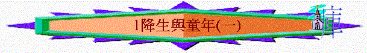
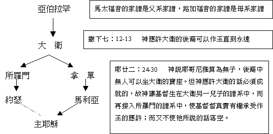

教師版
第一課：降生與童年(一)
引言：主耶穌降世為要拯救罪人，是宇宙中最重要及最希奇的事，甚至天使都要詳細來察看，也是舊約眾先知所所預言及期待的事。參彼前一：１０—１２
。我們稱為基督徒的當對這位救贖我們的主所成就的事有深入的認識，也當透過祂在地上所留下的見證及話語來認識祂，從而使我們愛慕這位為我們捨命的主耶穌基督。
Ａ）事件的次序
由於傳統的聖誕故事及種種誤解聖經原意的觀念，使我們對主耶穌的降生似明非明，或多或少帶有我們對當中的次序及重點誤解了，如我們多以主耶穌是在聖誕節（西曆十二月廿五日）降生。我們首先要來認識當中的次序，及簡略的點出要點。
１）天使報信與馬利亞
路一：２６—３８
因世人都犯了罪，從父母結合而生的人都帶有罪性，只有從聖靈感孕而生的主耶穌才是無罪，祂才有資格來作世人的救主，故此 神早對夏娃應許──女人的後裔（不是從男人而生），參創三：１５，又藉以賽亞先知預言──必有童子懷孕生子，賽七：１４，為要成就這救贖的計劃，故在時候滿足就差主耶穌降世來作成救贖。 神揀選了一對已經定婚卻未成婚的鄉村男女，路加福音記載童女馬利亞的事，她是對 神有信心的女子，因她相信 神在舊約所應許的眾多說話，如必有童女懷孕生子等預言，但卻懼怕若有孕會對已訂立的婚約有何影響，約瑟會否不接納她呢？別人會否以她有淫亂而用石頭打死她呢？．．．．．．但當天使解釋及保證後，她則相信並接受 神的揀選，願為 神的使命而甘付代價，又把 神的話反覆思量，在她一生中對主耶穌從不懷疑而堅信到底。難怪乎 神揀選她來照顧主耶穌！我們可有這般的忠信嗎？
２）約瑟在異夢蒙指示
太一：１８—２５
神同樣在約瑟那一方面作工，因他實在是個好人，雖然知道馬利亞有了身孕卻為保存對方的名節，欲暗暗的把馬利亞休了，沒有想到自己受虧損。正在苦思不得辨法之時，天使在夢中對他顯現並吩咐他把馬利亞娶過來，因馬利亞所要生的是 神所應許的救主。約瑟夢醒時就順服天使的指示，可見他心中對 神亦存敬畏及信心。他把馬利亞娶過來，直到她生下主耶穌才與馬利亞同房。 神把主耶穌安放在一個甚麼樣的家庭中呢？是生在一個敬虔的家庭中，父母為敬畏 神，順服神的人。我們最重要的把甚麼帶給下一代呢？
３）首次報名上冊及主降生
路二：１—７
按舊約預言，基督當生在伯利恆，但那時約瑟及馬利亞正住在拿撒勒，以他們的清貧的生活，段不會作出搬遷的舉動，但 神全能的手在推動歷史，使該撒亞古士督下令全天下人民報名上冊即今的人口統計，但需要回到出生地作統計，為的是方便收稅。這是 神的智慧，使主按應許降生在伯利恆。亦看到 神親自的保守，使主一定降生在伯利恆中，彌五：１—２
。 神所應許的必定成就。
由於太多的人回鄉，使到客店無地方可以給他們住，只可以住在馬棚，這亦反映出世界對主是拒絕的。馬棚為衛生極差的地方，滿地馬糞又佈滿著蒼蠅。約瑟只得以馬槽充當育嬰的床，又因貧窮的緣故而用不到較好的布，主降生時是只得被人用碎布包著。主耶穌就在那夜無聲無息的降生在人間中，並是以一最貧窮的樣式到世間，為的是要明白經歷人世間的苦楚，要給人最大的安慰及支持，來四：１４—１６。
４）天使報喜信與牧羊人
路二：８—２０
在伯利恆的野地有牧羊人按著更次看守，按聖經的記載，牧羊人仍能在夜間看守，這時絕不是冬季，故絕不是現今人以為的聖誕節，這只不過是教會歷史上的人為產物。
天使及天軍向他們顯現，是因為他們是儆醒之人，又是單純的人，他們在聽到信息後，即時趕去仔細在城中尋找已降生的主耶穌，遠勝日後那群知而不行的祭司及文士。當他們得知主基督已降生，便高高興興的去傳揚救主的降生。可見 神對有心的人肯指引，問題在於我們對 神有心否！
５）行律法所要求的，遇西面及亞拿。
路二：２１—３８
律法上要求為新生的嬰兒獻祭，主耶穌是生在律法下，為我們完全了律法的要求，加四：４—５。約瑟與馬利亞雖是貧窮的人（因班鳩及雛鴿是人因貧窮才獻的祭物，主為我們成為了貧窮的，林後八：９。），但他們卻是守 神律法的虔敬人，在他們上聖殿獻祭之時，卻遇到西面與亞拿這一男一女年老的敬虔者，他們為到 神賜下的救主而歡欣感謝 神。
６）回拿撒勒
路二：３９
在報名上冊的事完成後，約瑟與馬利亞重回拿撒勒過活。
Ｂ）家譜的比較：

Ｃ） 成長的家庭
１）屬靈狀況：是生在一個敬虔的家庭中，父母為敬畏神，順服神的人。
２）家庭經濟：約瑟為木匠，在當時代是低下的工作，並從約瑟獻祭中見到他是貧窮的。
３）家庭遭遇：在主耶穌出來傳道之時，沒題及約瑟因他早逝，故這個家庭需面對困難。
Ｄ） 降生在馬槽
１）報名上冊即今的人口統計，但需要回到出生地作統計。這是神的智慧，使主按應許降生在伯利恆。亦看到神親自的保守，使主一定降生在伯利恆中，彌五：１－２。神所應許的必定成就。
２）由於太多的人回鄉，使到客店無地方可以給他們住，只可以住在馬棚，這亦反映出世界對主是拒絕的。馬棚為衛生極差的地方，滿地馬糞又佈滿著蒼蠅。
３）主出生時是被人用碎布包著，因貧窮的緣故而用不到較好的布。
４）天使指引牧羊人來朝見主，可以神對有心的人肯指引。
Ｅ） 遵律法所定
１）主是生在律法下，為我們完全了律法的要求，加四：４－５。
２）從獻祭當中看到約瑟的家庭是貧窮的，主為我們成為貧窮的，林後八：９。
３）在完成律法的要求後，就回拿撒勒去了
學生版
第一課：降生與童年(一)
Ａ） 事件的次序
１）天使報信與馬利亞 路一：２６－２８
２）約瑟在異夢蒙指示 太一：１８－２５
３）首次報名上冊及主降生 路二：１－７
４）天使報喜信與牧羊人 路二：８－２０
５）行律法所要求的，遇西面及亞拿。 路二：２１－３８
６）回拿撒勒 路二：３９
７）再次回伯利恆 太二：１
８）幾博士來朝 太二：１－１２
９）逃下埃及重回拿撒勒 太二：１３－２３
１０）主耶穌十二歲上耶路撒冷 路二：４２－５０
１１）順服父母回拿撒勒 路二：５１－５２
B) 家譜的比較：
Ｃ） 成長的家庭
１）屬靈狀況：是生在一個敬虔的家庭中，父母為敬畏神，順服神的人。
２）家庭經濟：約瑟為木匠，在當時代是低下的工作，並從約瑟獻祭中見到他是貧窮的。
３）家庭遭遇：在主耶穌出來傳道之時，沒題及約瑟因他早逝，故這個家庭需面對困難。
Ｄ） 降生在馬槽
１）報名上冊即今的人口統計，但需要回到出生地作統計。這是神的智慧，使主按應許降生在伯利恆。亦看到神親自的保守，使主一定降生在伯利恆中，彌五：１－２。神所應許的必定成就。
２）由於太多的人回鄉，使到客店無地方可以給他們住，只可以住在馬棚，這亦反映出世界對主是拒絕的。馬棚為衛生極差的地方，滿地馬糞又佈滿著蒼蠅。
３）主出生時是被人用碎布包著，因貧窮的緣故而用不到較好的布。
４）天使指引牧羊人來朝見主，可以神對有心的人肯指引。
Ｅ） 遵律法所定
１）主是生在律法下，為我們完全了律法的要求，加四：４－５。
２）從獻祭當中看到約瑟的家庭是貧窮的，主為我們成為貧窮的，林後八：９。
３）在完成律法的要求後，就回拿撒勒去了。